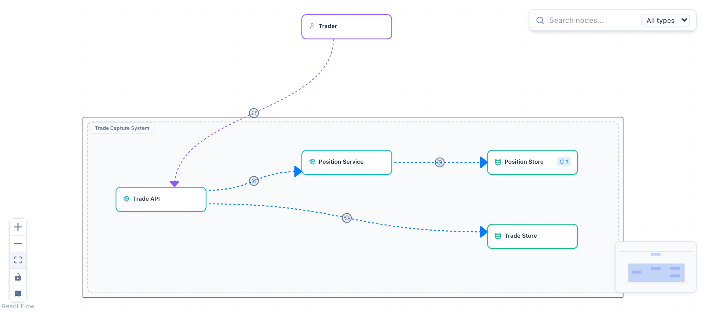

Governing the Agentic SDLC
Driving agentic development with FINOS CALM
Matthew Bain and Aaron Searle
OSFF New York, 4 November 2026
The risk event
Agentic coding tools will happily generate confident, syntactically correct, architecturally catastrophic code.
Tests pass. Types pass. A tired reviewer approves.
In a regulated institution that is not a bug. It is a risk event.
Every bank is solving it alone
- Home-grown guardrails for agents, written in every institution at once
- Duplicated effort, then drift: each set evolves on its own
- No shared language to compare them, audit them, or contribute them back
The same failure the SDLC Common Controls Catalog was created to fix for the human-driven SDLC.
The SDLC Common Controls Catalog
A shared, open reference library of software governance controls for regulated delivery. A FINOS incubating project, written in the open by a working group.
- 11 risks: undesirable outcomes the catalog seeks to reduce
- 22 mitigations: each names the risks it addresses, its type and the lifecycle phase where it applies
- Every entry maps to NIST SP 800-53r5 and, where relevant, EU DORA, NIST SSDF, SLSA and others
- Documents mature from Draft through First Reading to Working Group approval
The catalog at a glance
Risks
- SDLC-OP-007Configuration Drift
- SDLC-SEC-003Credential and Secret Exposure
- SDLC-SEC-004Vulnerable Software in Production
- SDLC-SEC-006Unauthorised System Access
- SDLC-SEC-008Unauthorised Change
- SDLC-SEC-009Environment Breach
- SDLC-SEC-010Dependency and Transitive Supply Chain Compromise
- SDLC-SEC-011Build Toolchain and Service Supply Chain Compromise
- SDLC-RC-001Insider Threat
- SDLC-RC-005Audit and Compliance Evidence Failure
- SDLC-BUS-012Business Reputation Risk from Non-Approved Software Version Releases
Mitigations
- SDLC-PREV-001Code Review
- SDLC-PREV-002Content Addressable Identities
- SDLC-PREV-003Software Artifact Provenance
- SDLC-PREV-004Requirements Repository
- SDLC-PREV-005Vulnerability Scanning: SAST
- SDLC-PREV-006Vulnerability Scanning: DAST
- SDLC-PREV-007Vulnerability Scanning: Dependencies
- SDLC-PREV-008Version Control
- SDLC-PREV-009Component Inventory
- SDLC-PREV-010Secret Detection
- SDLC-PREV-011Vulnerability Remediation SLAs
- SDLC-PREV-012Deployment Gating
- SDLC-PREV-013System Inventory
- SDLC-PREV-014Test Evidence Retention
- SDLC-PREV-015Testing Requirements
- SDLC-PREV-016Test Execution and Sign-Off
- SDLC-PREV-017Service Dependency Control
- SDLC-PREV-018Dependency Curation
- SDLC-PREV-019Version Release Approval Gating
- SDLC-PREV-020Requirements Approval for Release
- SDLC-PREV-021Infrastructure Dependencies
- SDLC-PREV-022Data Retention and Disposal
The seven this talk enforces
| Id | Control |
|---|---|
| SDLC-PREV-001 | Code Review |
| SDLC-PREV-004 | Requirements Repository |
| SDLC-PREV-012 | Deployment Gating |
| SDLC-PREV-013 | System Inventory |
| SDLC-PREV-014 | Test Evidence Retention |
| SDLC-PREV-016 | Test Execution and Sign-Off |
| SDLC-PREV-017 | Service Dependency Control |
Risks in view
- SDLC-OP-007 Configuration Drift
- SDLC-SEC-008 Unauthorised Change
- SDLC-RC-005 Audit and Compliance Evidence Failure
FINOS SDLC Common Controls Catalog, finos.github.io/sdlc-common-controls
The missing piece
The catalog says what the controls are.
The missing piece is making them machine-enforceable when the developer is an AI agent.
FINOS CALM is the key.
The loop
Six nodes, five relationships

ties a directory of code to a node
names how code binds to an interface
SDLC-PREV-013 inventory attributes, and review policy inputs later
Controls as data
On the position-store node:
"sdlc-prev-017-service-dependency": {
"requirements": [{ "config": {
"catalog-id": "SDLC-PREV-017",
"enforced-by": "gates/drift-check.mjs",
"allowed-sources": ["position-service"]
} }]
}
Plus a pattern: every service must carry a source path, a tier and a classification, and the system its four controls.
Delete source-path from trade-api and validate:
A control in a catalog is prose. A control on a CALM node is data with a schema, an owner and an enforcement point.
SPEC-001 pins itself to the model
--- id: SPEC-001 title: Account summary endpoint status: approved calm-nodes: [trade-api, position-service] calm-relationships: [trade-api-to-position-service] ---
The front matter fixes the scope an agent may touch. The body repeats, in words, the one constraint most likely to be violated.
What the agent receives, over MCP or the CLI:
Context engineering becomes a lookup, not a prompt-writing skill.
Attempt A: the reasonable shortcut
// services/trade-api/src/config.ts
+ // Positions are already on disk next to us: read them directly and save a network hop.
+ positionStorePath: process.env.POSITION_STORE_PATH ?? 'data/positions.json',
// services/trade-api/src/app.ts
+ const all = existsSync(positionStorePath) ? JSON.parse(readFileSync(positionStorePath, 'utf8')) : {};
+ return send(res, 200, { account, trades, positions: all[account] ?? {} });
Green. Types pass. A reviewer skimming the diff would likely approve it.
Attempt A at the gate live
Attempt B, and two real agents
Same prompt, real agent, twice: "Implement SPEC-001."
| unassisted | assisted | |
|---|---|---|
| AGENTS.md, MCP | removed | present |
| Result | conformant | conformant |
| Read the model first | opened the JSON | MCP context tool |
| Wall clock | 748 s | 279 s |
Neither drifted. The unassisted agent found and read the gates on its own. The context changed the path, not the destination. One sample each: docs/live-runs.
The policy lives in the model
"sdlc-prev-001-code-review": {
"requirements": [{ "config": {
"author-may-not-review": true,
"default-mode": "human",
"rules": [
{ "mode": "human",
"paths": ["architecture/", "gates/",
"agent/", ".github/"] },
{ "mode": "human",
"max-criticality-tier": 1,
"data-classifications":
["confidential", "restricted"] },
{ "mode": "cognitive",
"max-criticality-tier": 4,
"paths": ["specs/", "test/"] },
{ "mode": "automated",
"paths": ["README.md",
"docs/", "labs/"] }
]
} }]
}
Add one comment to the tier 1 service:
Attempt C: the agent edits the model live
The right path: a declared model change
1. A human applies the spec and the model change together:
2. Then the agent implements inside the new scope:
SPEC-002 needs position-service to reach trade-api. Its front matter says so: model-change: [trade-api, position-service-to-trade-api]. Human first, then the agent.
One bundle per change live
Commit with the spec trailer, run evidence. Bound to the commit, the spec and the exact architecture, then hashed.
In CI, every step names its control
| Workflow step | Control |
|---|---|
| gitleaks | SDLC-PREV-010 Secret Detection |
| npm audit | SDLC-PREV-007 Dependency scanning |
| npm sbom | SDLC-PREV-009 Component Inventory |
| gates | SDLC-PREV-012 Deployment Gating |
| evidence artefact | SDLC-PREV-014 Test Evidence Retention |
Three candidate controls for the catalog
| Candidate | Intent | Reference implementation |
|---|---|---|
| Architecture Conformance | Code admitted to a protected baseline must not introduce connections absent from the approved, machine-readable architecture | gates/drift-check.mjs, gates/model-diff.mjs, the pattern |
| Agent Task Scoping | An agent's change is bound to an approved requirement that declares its architectural scope in advance | gates/spec-check.mjs |
| Agent Attribution and Context Provenance | Show which agent identity produced a change, under which instructions, with which architectural context | gates/evidence.mjs (partial) |
Drafts to start a conversation, not catalog content. docs/CANDIDATE-CONTROLS.md
Where to contribute
Catalog
Controls for the agentic SDLC. The three candidates, or better ones.
CALM
Modelling gaps, patterns like the governed-service pattern, richer conformance signals.
AI Governance Framework
Agent mitigations. Already expressed as a CALM controls domain in CALM Hub.
Make it yours
- Fork the repo. Node 22, git, npm install. No API key, no cloud account, under five minutes.
- Model your own estate. Nodes, connects relationships, source paths. Validate against the pattern.
- Wire it into your agent. Keep AGENTS.md, swap the model path. Open a pull request on your fork and read the bundle.
- Contribute. Controls to the catalog, modelling gaps to CALM.
- Repo
- Site and deck
- Architecture
- on CALM Hub
- Pattern
- on CALM Hub
- Controls
- on CALM Hub